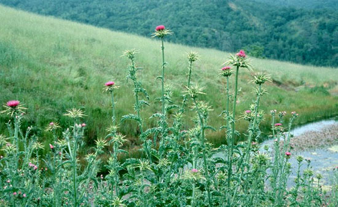
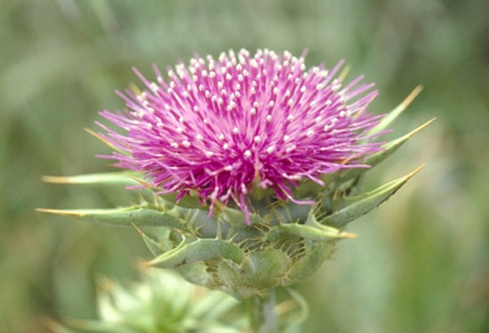

|
EFECTOS DEL CARDO
MARIANO (Silybum marianum)
Klara Tuset, 2004

Silybum Marianum. Copyright � Lee Dittmann,
www.coestatepark.com
Una
de las principales causas de mortalidad entre las tortugas terrestres
mantenidas en cautividad es la lesi�n hep�tica y/o renal, que suelen
presentarse asociadas y que tienen como causa una dieta inadecuada
(demasiado alta en prote�nas y grasas, fundamentalmente) y el exceso
en la administraci�n de f�rmacos, normalmente antibi�ticos, por v�a
oral o parenteral (inyecciones intravenosas, subcut�neas o
intramusculares), sin prescripci�n veterinaria en la mayor�a de las
ocasiones. Adem�s, hay que tener en cuenta que muchos de estos
f�rmacos administrados son hepat�xicos y que las dosis utilizadas
com�nmente no siempre son las m�s adecuadas para unos animales con un
metabolismo tan lento.
El h�gado y los ri�ones de las tortugas herb�voras son �rganos que
est�n preparados para poder asimilar dietas con un m�ximo del 7% de
prote�na y tienen muy poca capacidad de excreci�n o eliminaci�n por
medio de la orina de los deshechos y toxinas que se producen en la
absorci�n de las drogas y medicamentos.
Esto se debe a que su metabolismo es extremadamente lento. Adem�s, en
el caso de las tortugas del g�nero testudo, �stas no orinan con
regularidad debido a la aridez de sus h�bitats naturales, sino que
acumulan y retienen l�quidos durante el mayor tiempo posible para
evitar la deshidrataci�n. Esto hace que los detritus resultantes del
exceso de prote�na en la dieta (urea), grasas (degeneraci�n hep�tica
grasa) y medicamentos (toxinas) se acumulen en la sangre y �rganos
hasta llegar a producir lesiones hep�ticas y renales, como la
concentraci�n de cristales de �cido �rico o el fallo org�nico (estos
�rganos dejan de funcionar o lo hacen incorrectamente), hasta llegar
incluso a provocar la muerte del animal. Adem�s, el mantenimiento
incorrecto en terrarios favorece la aparici�n de lesiones hep�ticas
extremadamente graves. Por ejemplo, la obesidad provocada por la
sobrealimentaci�n y la falta de actividad f�sica por el mantenimiento
en terrarios de dimensiones reducidas puede provocar lesiones
hep�ticas como la lipidosis (acumulaci�n de grasa en los hepatocitos
�c�lulas del h�gado-). Tambi�n suele presentarse micosis sist�micas
provocadas por hongos en el h�gado de las tortugas mantenidas a
temperaturas inferiores a las debidas, ya que esto provoca la
depresi�n del sistema inmunitario que favorece su proliferaci�n.
El
cardo mariano (Silybum Marianum) puede sernos muy �til para
prevenir o tratar el da�o hep�tico mediante sustancias naturales como
la silimarina y sin provocar efectos secundarios da�inos. El
cardo mariano es una planta herb�cea de la familia Asteraceae que
crece a lo largo de toda la cuenca mediterr�nea (sur de Europa, sur de
Rusia, Asia Menor y norte de �frica), por lo que su distribuci�n
coincide plenamente con el h�bitat original de las tortugas del g�nero
testudo, y sus hojas j�venes, poco espinosas, constituyen parte de la
dieta natural de estos animales.
Aunque las propiedades beneficiosas para el h�gado del cardo mariano
se conocen desde la antig�edad, fue en la d�cada de los a�os sesenta
cuando un grupo de investigadores alemanes consiguieron identificar y
aislar el principio hepatoprotector de esta planta (al que denominaron
silimarina) y fue aprobado por la Agencia del Medicamento como
principio activo con propiedades demostradas.

Flor de cardo mariano.
www.viarural.com.ar
Se pueden encontrar numeros�simos compuestos farmacol�gicos en el
mercado elaborados con silimarina, ya que constituye el tratamiento
m�dico base de casi todas las afecciones hep�ticas humanas, pero es
recomendable utilizar �nicamente los extractos en polvo comerciales
con una concentraci�n de silimarina de entre el 70 y el 80% (esta
proporci�n es la �estandarizada�, es decir la aprobada por la
comunidad cient�fica).
La
utilizaci�n directa de las semillas del cardo mariano (con un aspecto
muy similar a las semillas de girasol peladas) puede presentar
problemas, ya que en ellas la concentraci�n de silimarina no siempre
es constante (var�a entre el 1,5 y 3%) y es imposible establecer una
dosis exacta si no se conoce la concentraci�n. Adem�s, las semillas
contienen entre un 20-30% de �cidos grasos, por lo que si se abusa de
ellas se incrementa la proporci�n de grasa de la alimentaci�n. Sin
embargo, con el empleo de las semillas se evita una posible diarrea
ligera que se observa en la administraci�n del extracto estandarizado
en polvo y se aumenta la dosis de fibra de la alimentaci�n.
Los
extractos en polvo deben cumplir siempre la norma de un contenido en
silimarina del 70-80%, ya que las dosis establecidas en este art�culo
est�n referidas a los productos estandarizados como los de las casas
comerciales Natur-Import o Indena.
�C�mo act�a el Cardo Mariano?
La silimarina es un conjunto de flavolignanos (silibinina,
silicristina, silidianina y sus correspondientes desoxiderivados) que
act�a como protector del h�gado (hepatoprotector), anti-oxidante de
las c�lulas hep�ticas (hepatocitos), reduce el colesterol y previene
la formaci�n de piedras biliares gracias a su estimulaci�n de la
secreci�n biliar.
La
silimarina refuerza la membrana celular externa de los hepatocitos
evitando que estos absorban las toxinas resultantes de una dieta con
un exceso de grasa o prote�na o de la administraci�n de f�rmacos.
Adem�s, estimula la producci�n de nuevos hepatocitos gracias a su
acci�n sobre la polimerasa A.
Estudios en laboratorio realizados por la facultad de medicina de la
Universidad de Palacky (Rep�blica Checa) demostraron que la
administraci�n de 150 mg de silimarina en humanos acelera en un 70% la
velocidad de eliminaci�n de los agentes hepatot�xicos.
Adem�s, se ha demostrado la eficacia de la silimarina contra el virus
hepatot�xico FV3, tambi�n denominado Ranavirus Eritroc�tico,
caracter�stico de los reptiles y anfibios. Este virus de la familia
iridovirus se descubri� en 1989 en poblaciones de ranas de Canad� y
afecta a los gl�bulos rojos provocando graves anemias en los animales
infectados. Este virus se reproduce a temperaturas de 28 grados
cent�grados, pero no soporta temperaturas superiores a los 36 grados.
Esta idoneidad de reproducci�n y supervivencia en temperaturas
corporales relativamente bajas hace que este virus sea propio de
animales ectot�rmicos (reptiles y anfibios), aunque tambi�n se ha
aislado en peque�as aves y mam�feros.
Este ranavirus ha sido aislado en los tejidos hep�ticos de testudo
hermanni por Heldstab & Bestetti en 1982 y, posteriormente, por el
Instituto de Enfermedades de reptiles y anfibios de la Universidad
Justus Liebig de Giessen.
Tratamiento y dosificaci�n
El tratamiento con cardo mariano refuerza la membrana celular de los
hepatocitos evitando que las toxinas accedan a �l, activa la formaci�n
de nuevos hepatocitos y ayuda a reducir el colesterol. Por ello, puede
usarse de manera preventiva o como tratamiento complementario en las
lesiones hep�ticas.
�
Administraci�n de semillas:
S�lo es posible en tortugas de gran tama�o y peso, ya que es muy
dif�cil calcular y medir las dosis en ejemplares peque�os. Aunque se
han administrado las semillas enteras, mezcladas con la comida, en un
grupo de diez tortugas entre los 40 y los 200 gramos de peso sin
muestras de impactaci�n intestinal, es recomendable ofrecer las
semillas enteras a animales por encima de los 300 gramos para evitar
este riesgo.
La
dosis recomendada es de 0,2 gramos de semillas mezcladas con la comida
por cada 500 gramos de peso. Aunque las semillas contienen un 25-30%
de prote�na, �stas no llegan a ser asimiladas por la tortuga, ya que
la elevada cantidad de fibra no absorbible (trazas de muc�lago) que
contiene las semillas hace que sea imposible.
�
Administraci�n de extracto en polvo:
Deber�n usarse extractos estandarizados con un contenido del 70-80% de
silimarina (normalmente en forma de silibina). La dosis recomendada es
de 0,8 mg de silimarina por cada 100 gramos de peso. A la hora de
establecer las dosis es imprescindible fijarse en la concentraci�n de
silimarina, no el contenido total de polvo de cardo. Por ejemplo, las
c�psulas de cardo mariano de la casa Natur-Import contienen 250 gramos
de polvo de semillas con un contenido total del 80% de silimarina y se
administra de la siguiente manera:
1� Cada c�psula contiene 250 mg de polvo de semillas, de los
cuales 200 mg son silimarina (el 80%). El contenido de la c�psula se
diluye en 12,5 ml de agua caliente (se hace una infusi�n y se deja
reposar para que enfr�e).
2� Cada 0,05 ml de esta disoluci�n contiene 1 mg de polvo de
semillas, del cual 0,8 mg es silimarina (el 80%). Se debe adaptar la
dosis de acuerdo al peso del animal y se puede administrar por v�a
oral con una jeringa o mezclado con la comida.
3� El resto se puede conservar en nevera para las tomas
siguientes, aunque es recomendable agitar bien la mezcla para evitar
que el extracto se pose en el fondo de la disoluci�n.
Tanto en la administraci�n de las semillas como en la del polvo
estandarizado, debe ofrecerse una �nica dosis diaria durante siete
d�as seguidos para que llegue a ser efectivo y no debe repetirse la
operaci�n m�s de una vez al mes, ya que puede manifestarse un ligero
efecto diur�tico que, a la larga, podr�a provocar deshidrataci�n en el
animal.
|